Mis primeras palabras · English and Spanish
Every topic in the book has a QR code. Scan it with your phone camera and this page opens. Tap a picture: your child hears the word in English, then in Spanish (choose one language, a woman's or a man's voice, normal or slow). Then play Listen and find and practice speaking with My Turn. Use Projector to show the words on a big screen in class.
Cada tema del libro tiene un código QR. Escanéalo con la cámara de tu teléfono y se abre esta página. Toca un dibujo: tu hijo escucha la palabra en inglés y luego en español (puedes elegir un idioma, voz de mujer u hombre, normal o lento). Luego jueguen Escucha y encuentra y practiquen con Mi turno.
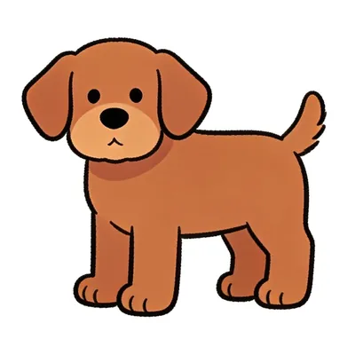
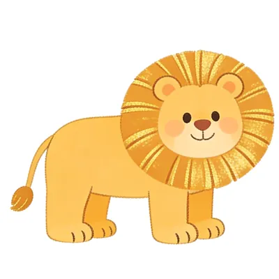
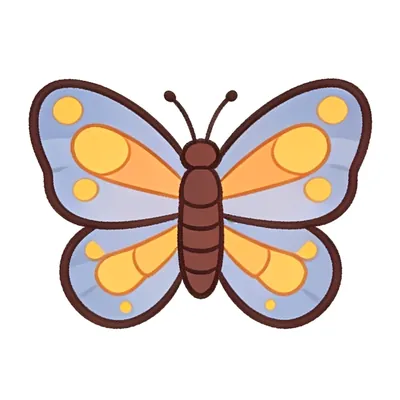
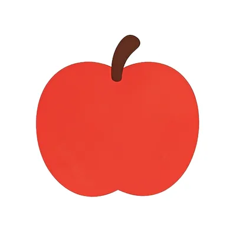
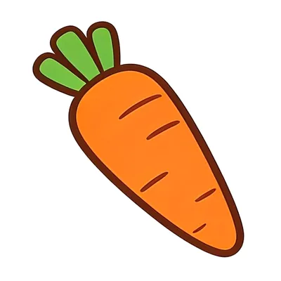
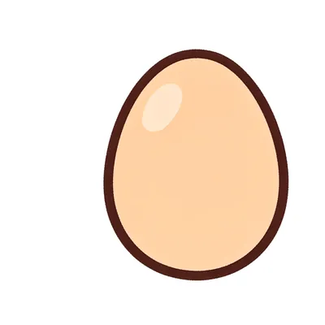
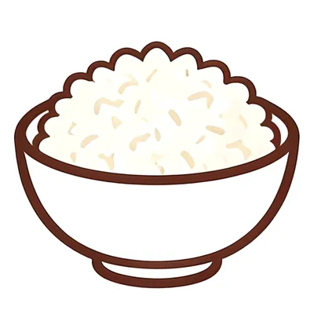
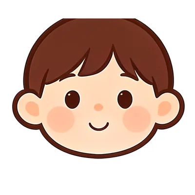
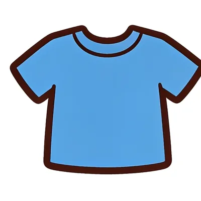
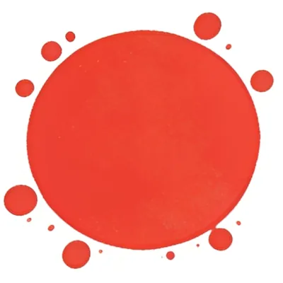
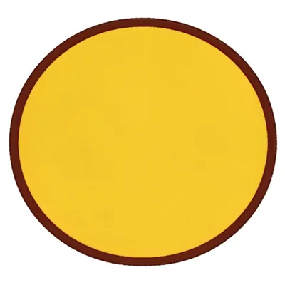
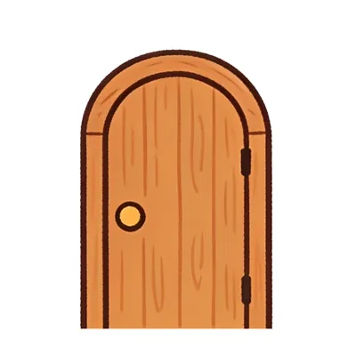
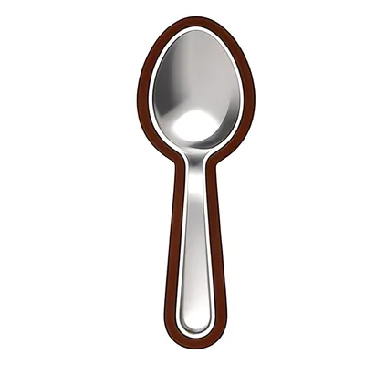
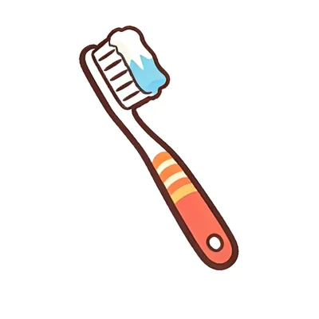
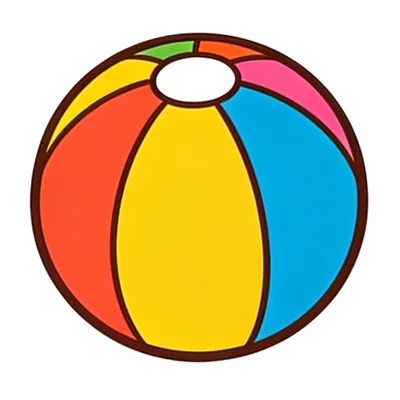
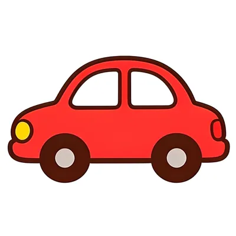
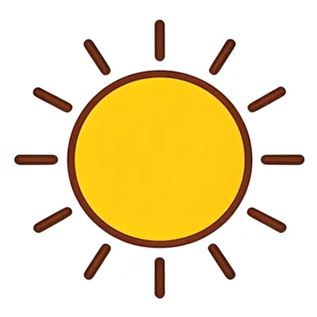
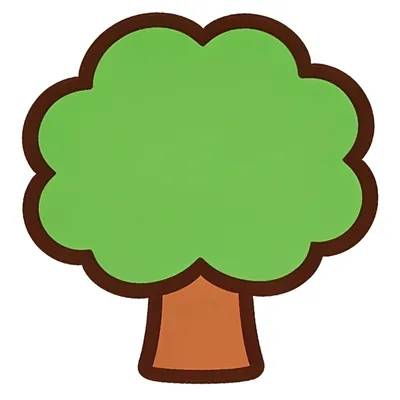
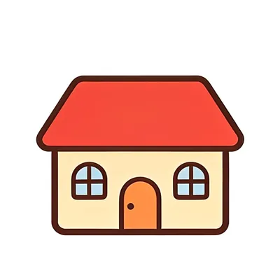
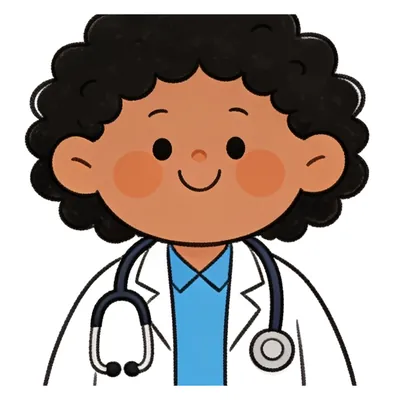
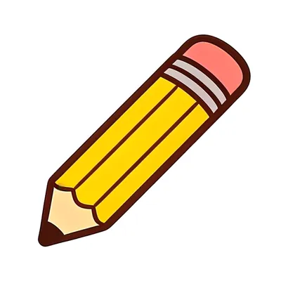
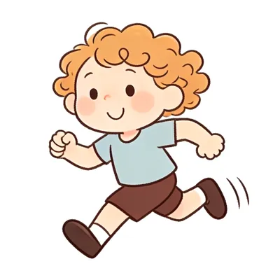
My First Words in English and Spanish · © CourseCraft English · coursecraftenglish.com